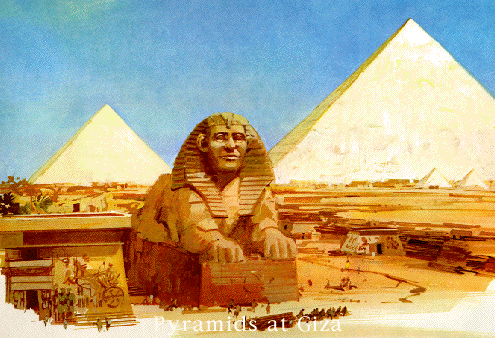

The Great Pyramid at Giza
The Great Pyramid at Giza is the oldest and largest of three Egyptian pyramids near modern Cairo. Each of these three pyramids was built using a different mathematical proportion. Herodotus believed that construction of the Great Pyramid used 100,000 workers and took approximately twenty years to complete this project. The Great Pyramid was completed around 2570 B.C. All three pyramids were built during the 4th dynasty in the Old Kingdom. The Great Pyramid was built for Khufu, Hellanized as Cheops and is known by any of these three names. The Great Pyramid is believed to be built using the Golden Mean as its proportions, meaning that the relationship between the base of the pyramid and its hypotenuse is based in the square root of 5. Proportionally, given that the base of the Great Pyramid is 1, then the hypotenuse is 1.618 and the height of the pyramid is .618
They pyramid is built using over 2.3 million blocks of granite or limestone where the average block weighs 2.5 tons. The weight range is from an estimated 2 tons to possibly 80 tons in the King's main chamber. The base of the pyramid covers over 13 acres. When the pyramid was first built, it had smooth walls. The pyramid as we see it today is approximately 15 meters shorter and narrower than it was when it was completed. Today's stepped appearance is due to the removal (vandalization) of the outer layer of limestone, which was removed for other construction projects around Cairo.
| Pyramids of Giza Chambers | |||
|---|---|---|---|
| Pyramid Interior | Height | Length | Material |
| Queens Chamber | 18 ft | 151 ft | Sarcophagus |
| Kings Chamber | 19.02 ft | 34.28 ft | Red Granite |
| Grand Gallery | 28.21 ft | 154 ft | Limestone |
| Entrance | 56 ft | 481.4 ft | Limestone |
| Average: | 30.30 ft | 205.17 | N/A |